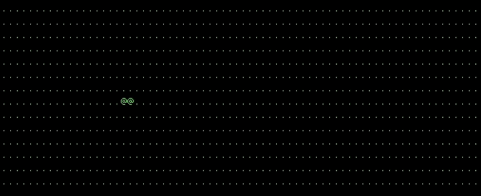

For our project we are adpating the bounce.cpp file and incoperating the various
tools. We are incoperating the colision detection from the linline.cpp and applying
that logic as well as the logic from client server to make it online as well as the
input reading from lab1 that used KBhit to read in keybaord input.